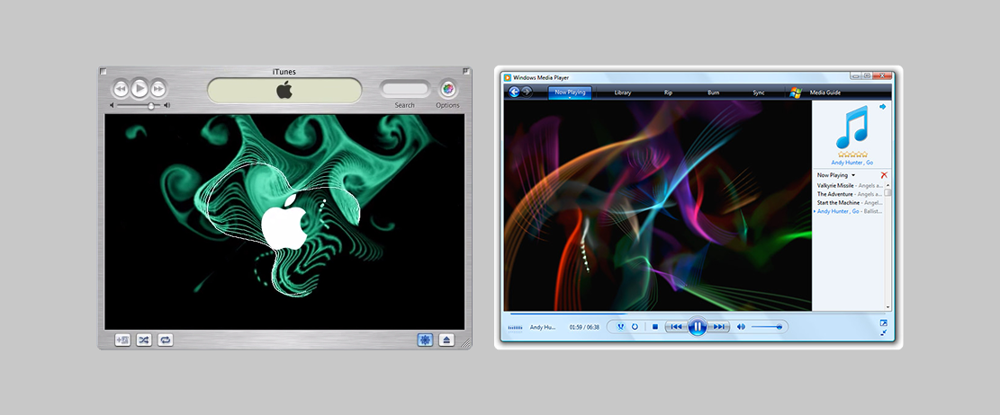

Mindmap
Web app audio visualizer using digital media

OVERVIEW
Mindmap brings a tangible meaning to intangible memories by allowing people to visualize personal media (photos, videos, text, links, etc.) through a sound associated with those memories.
THE CHALLENGE
The fear of forgetting drives much of our experiences with media: capturing photos to remember an event, journaling to capture feelings, creating a playlist to commemorate a special occasion. Music, however, has a unique relationship with memory.
Songs engage both the left and right hemispheres of the brain, strengthening the neural pathways that link sound with memory and emotion.

See "The Neural Architecture of Music-Evoked Autobiographical Memories" study for more details
THE GOAL
Enable users to create meaningful, memory-driven audio visualizations by integrating personal media into the listening experience.
An audio visualizer is a multi-dimensional experience engaging sound, sight, and the environment. The design approach needed to be intuitive, informational, and carefully abstracted, to ensure users wouldn't experience mental fatigue creating their Mindmap.
RESEARCH
Drawing inspiration from the first ever music visualizer, the forgotten Atari Video Music (1977), I wanted the UI to nod to the pioneering audio equipment.
Atari Video Music's interface affords a playful, generalized way to control the the pastel pixelated shapes seen on the TV.
Growing up, my first exciting experience with a computer was toying with the iconic iTunes song visualizers. While extremely innovative at the time, they lacked the memory-driven way to connect with music that is so central to the listening experience.
RESEARCH FINDINGS
Both experiences, 30 years apart, access the same dimensionality of audio-to-visual experience.
I realized I wanted to blend the vintage simplicity of the Atari interface with the fluidity of the iTunes visualizer to create a more personal and memory-rich experience.
IDEATION
Much of the build relies on the user uploading their media and selecting a song. To help users curate an authentic experience, the motion and interaction design of the user adoption needed to be clean.
I decided to construct my lofi wireframes in an animation-style storyboard to center the entire experience around motion and interaction.

The color palette design elements, and design UI building blocks draw inspiration from the design of early immersive audio experiences (speaker baskets, cones, and spiders translate nicely to UI buttons).

MOTION
Audio visualizers are inherently fluid, so the process of creating a Mindmap should feel just as smooth, natural, and intentional. Taking note from Uber's motion design playbook, each UI animation follows a cubic bezier to emphasize easing to allow movement to "mimic motion in the real world".

FINAL DESIGNS
Enjoy the final implementation:
FUTURE
Mindmap helped me learn the amount of conceptual work that goes into motion and interaction design for consumer-facing products. In the future, I hope to develop Mindmap into a 3D visualization experience using Three.js.
That's all for now, cheers!